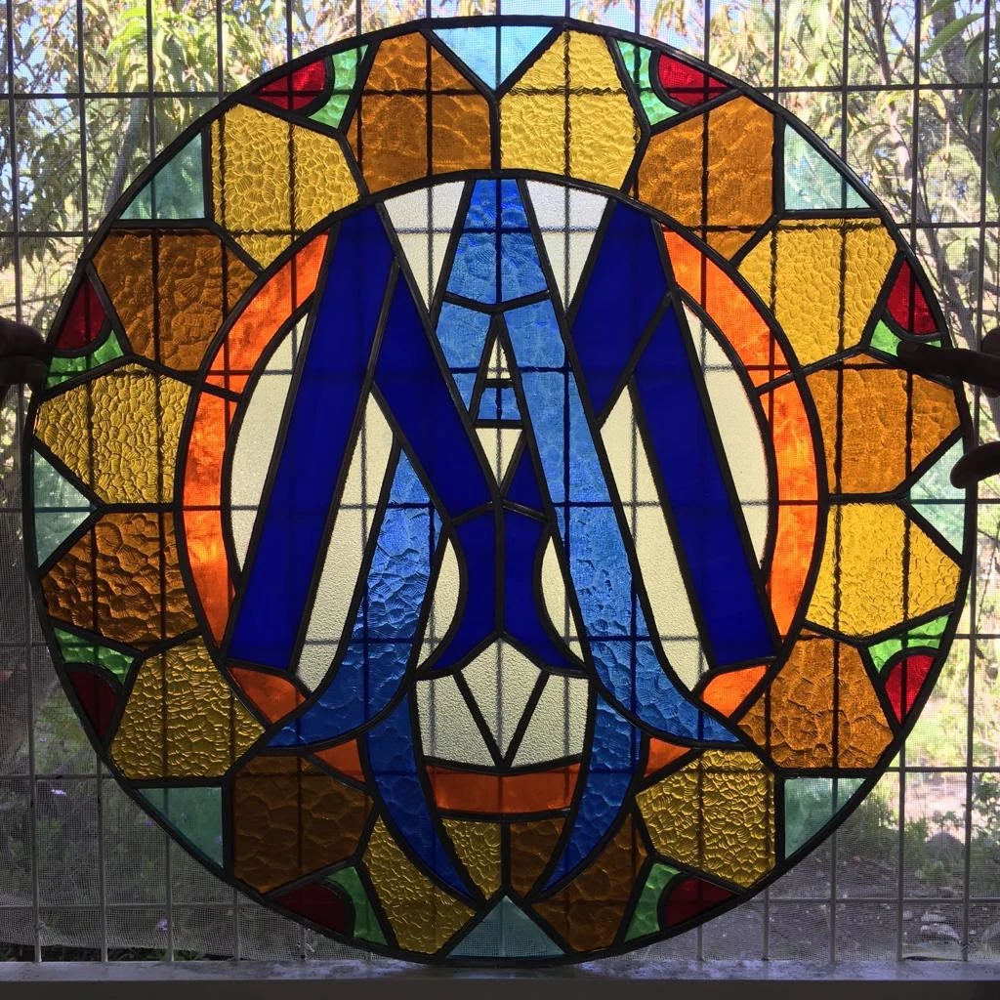
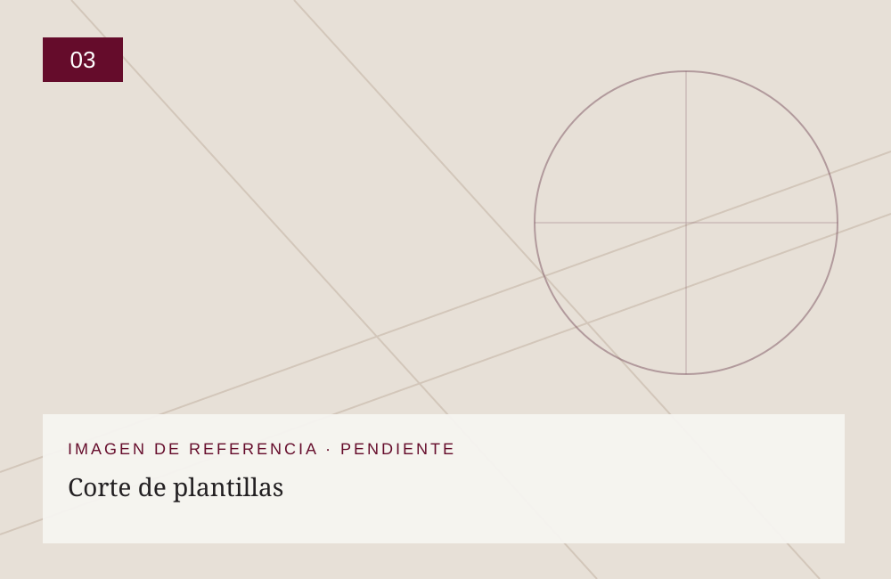
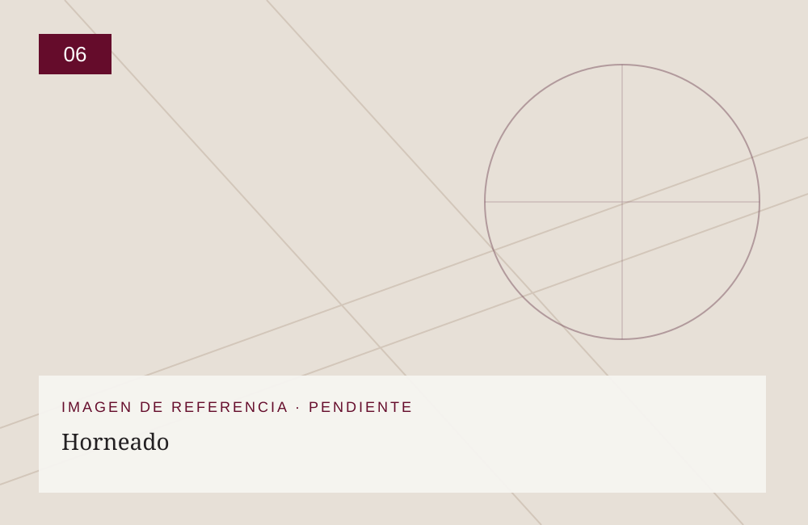
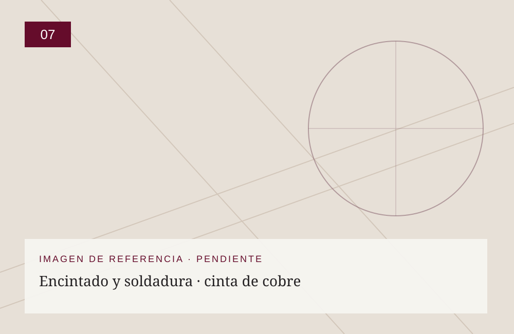
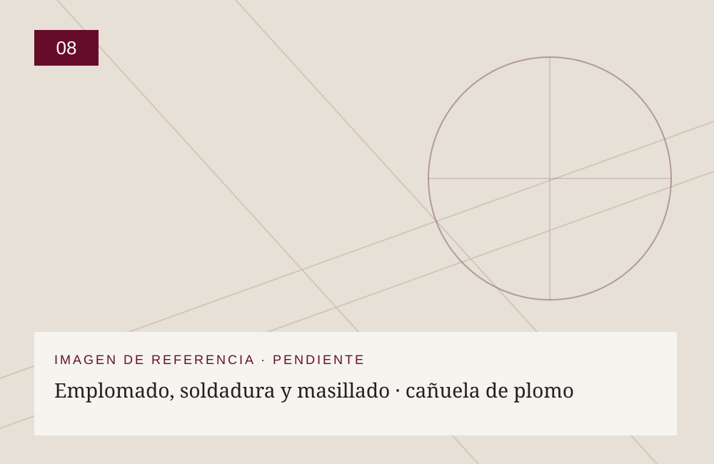
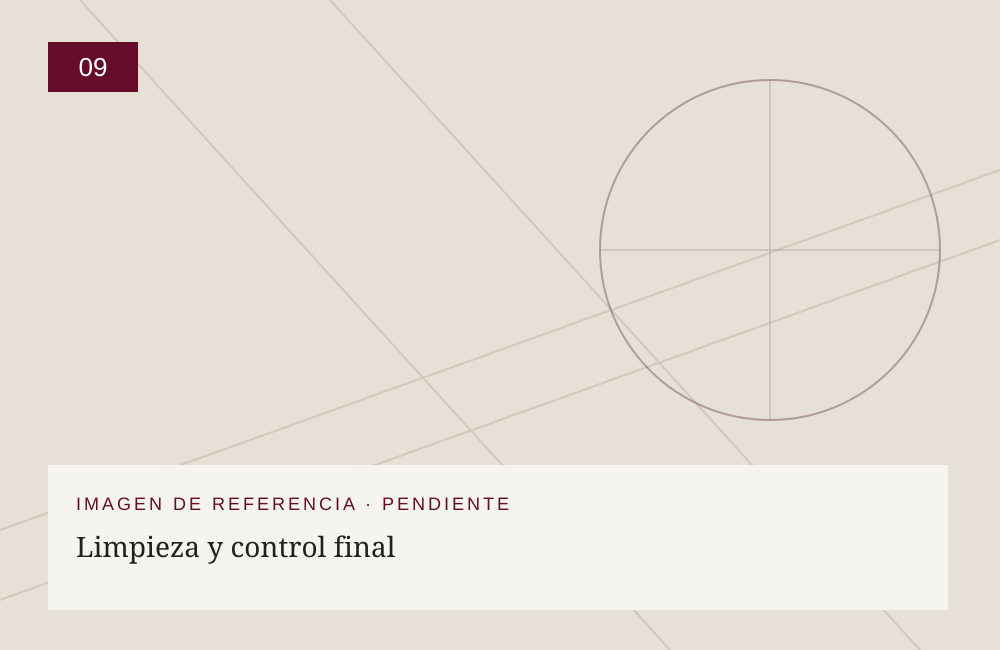

01
Impresión del diseño final
Imprimimos el diseño aprobado a escala real para establecer la geometría y distribución de las piezas.
NUESTRO OFICIO / FABRICACIÓN
Cada vitral se elabora artesanalmente mediante un proceso de precisión y conocimiento técnico. Trabajamos con cinta de cobre y cañuela de plomo; las operaciones de ensamblaje cambian según la técnica elegida. La pintura artística y el horneado se realizan cuando el diseño lo requiere.

EL PROCESO
Las imágenes de las etapas son referencias gráficas temporales. Se reemplazarán por fotografías reales del taller sin alterar el contenido ni la estructura de la página.
Imprimimos el diseño aprobado a escala real para establecer la geometría y distribución de las piezas.
Definimos los colores, texturas y tipos de vidrio de cada pieza.

Preparamos las plantillas individuales de acuerdo con el despiece del diseño.
Cortamos las piezas siguiendo las plantillas y pulimos sus bordes para conseguir un ajuste preciso.
Cuando corresponde, aplicamos pinturas especiales y grisallas para representar detalles y volúmenes.

Cocemos las piezas pintadas bajo condiciones controladas para fijar la decoración sobre el vidrio.

Recubrimos los bordes de cada pieza con cinta de cobre, componemos el panel y soldamos las uniones.

En esta técnica ensamblamos las piezas con perfiles de plomo, soldamos las uniones y realizamos el masillado.

Limpiamos el panel y revisamos las uniones, la geometría y los acabados antes de la instalación.